2 Reference
This section is the reference manual of the Sketching programming language. It contains a description of all available functions illustrated with plenty small examples. Note that the function names in the source examples are clickable. For more elaborate examples see the examples in the last section of this manual.
If you find any mistakes in either the text or the examples, please make an Github issue at https://github.com/soegaard/sketching/.
| Setting | stroke no-stroke fill no-fill background color-mode |
| Creating and Reading | color
red
green
blue
alpha
hue saturation brightness lerp-color |
| Coordinates | mouse-x mouse-y pmouse-x pmouse-y |
| Buttons | mouse-button mouse-pressed mouse-released |
| Events | on-mouse-dragged
on-mouse-moved on-mouse-pressed on-mouse-released |
| Keys | key key-pressed |
| Keyboard Events | on-key-pressed
on-key-released on-key-typed |
| Time and Date | year month day hour minute second millis |
| Curves | bezier |
| Modes | ellipse-mode rect-mode |
| Stroke | stroke-cap stroke-join stroke-weight |
| Vertex | vertex begin-shape end-shape |
| Image | image
create-image load-image save-image image-mode load-pixels set-pixel update-pixels |
| Transform | rotate
scale
translate
shear-x shear-y push-matrix pop-matrix |
| Operators | modulo
remainder
quotient
+= -= *= /= ++ -- |
| Calculation | abs ceil constrain dist exp floor lerp log mag max min norm pow random remap round sq sqrt |
| Trigonometry | cos
sin
tan
acos
asin
atan
atan2
radians degrees |
| Conversion | int char binary unbinary hex unhex |
| Constants | pi π pi/2 π/2 pi/4 π/4 2pi 2π |
| Noise | noise simplex-noise |
2.1 Color
There are quite a few ways of specifying colors for both the stroke, fill and background.
An single integer is interpreted as a gray tone (black is 0 and white is 255).
A string or symbol with the name of "common" colors like white, black, red, etc gives the corresponding color. The full list of recognized color names is the same as used elsewhere in Racket.
A string of the form "#rrggbb" where rr, gg and bb are hexadecimal (0-9a-f) is seen as an rgb-color code.
If three numbers are used, they are interpreted as either rgb (red-green-blue) values or hsb (hue-saturation-brightness) values according to the current color mode.
The default scale of most color values are from 0 to 255, but the user can change the maximum value of a scale using color-mode.
2.1.1 background
Name: background
Sets the background color.
Examples
> (background 51)
> (background 255 204 0)
Usage
(background rgb)
(background rgb alpha)
(background gray)
(background gray alpha)
(background v1 v2 v3)
(background v1 v2 v3 alpha)
(background image)
Arguments
rgb |
| A color value. |
alpha |
| An alpha level. |
gray |
| An integer. |
v1 |
| Red or hue value. |
v2 |
| Green or saturation value. |
v3 |
| Blue or brightness value. |
If the color mode is rgb, then the values v1, v2, v3 are rgb-values.
If the color mode is hsb, then the values v1, v2, v3 are hsb-values.
Description
Sets the background color.
The background function sets the color used for the background of the Sketching window. The default background is light gray. This function is typically used within draw to clear the display window at the beginning of each frame, but it can be used inside setup to set the background on the first frame of animation or if the backgound need only be set once.
2.1.2 red
Name: red
Extracts the red component of a color.
Examples
> (color-mode 'rgb 255) > (define c (color 255 204 0)) > (red c) 255
> (color-mode 'rgb 100) > (red c) 100
(color-mode 'rgb 255) (fill c) (rect 15 20 35 60) (fill (red c) 0 0) (rect 50 20 35 60) 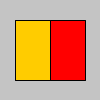
Usage
(red rgb)
Arguments
rgb |
| A color value. |
Description
Extracts the red value from a color.
The red component is a value from 0 to the maximum red level. A red value of 0 means no red and the maximum means fully red. The default range of red values is 0 to 255. Use color-mode to change the default range.
2.1.3 green
Name: green
Extracts the green component of a color.
Examples
> (color-mode 'rgb 255) > (define c (color 20 75 200)) > (green c) 75
> (color-mode 'rgb 100) > (green c) 29
(color-mode 'rgb 255) (fill c) (rect 15 20 35 60) (fill 0 (green c) 0) (rect 50 20 35 60) 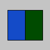
Usage
(green rgb)
Arguments
rgb |
| A color value. |
Description
Extracts the green value from a color.
The green component is a value from 0 to the maximum green level. A green value of 0 means no green and the maximum means fully green. The default range of green values is 0 to 255. Use color-mode to change the default range.
2.1.4 blue
Name: blue
Extracts the blue component of a color.
Examples
> (color-mode 'rgb 255) > (define c (color 175 100 220)) > (blue c) 220
> (color-mode 'rgb 100) > (blue c) 86
(color-mode 'rgb 255) (fill c) (rect 15 20 35 60) (fill 0 0 (blue c)) (rect 50 20 35 60) 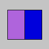
Usage
(blue rgb)
Arguments
rgb |
| A color value. |
Description
Extracts the blue value from a color.
The blue component is a value from 0 to the maximum blue level. A blue value of 0 means no blue and the maximum means fully blue. The default range of blue values is 0 to 255. Use color-mode to change the default range.
2.1.5 alpha
Name: alpha
Extracts the alpha component of the color c.
Examples
> (define c (color 0 126 255 102)) > (alpha c) 102
(define c (color 0 126 255 102)) (no-stroke) (fill c) (rect 15 15 35 70) (fill (alpha c)) (rect 50 15 35 70)

Usage
(alpha rgb)
Arguments
rgb |
| A color value. |
Description
Extracts the alpha value from a color.
The alpha component is a value from 0 to the maximum alpha level. An alpha value of 0 means fully transparent and the maximum means opaque. The default range of alpha values is 0 to 255. Use color-mode to change the default range.
2.1.6 hue
Name: hue
Computes the hue value of a color.
Examples
> (color-mode 'hsb 255) > (define c (color 0 126 255)) > (hue c) 0.0
(fill c) (rect 15 20 35 60) (fill (hue c)) (rect 50 20 35 60) 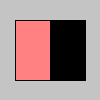
(no-stroke) (color-mode 'hsb 360 100 100)
(for ([x 360]) (stroke x 100 100) (line x 0 x 50)) "Hues from 0 to 360." 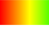
Usage
(hue rgb)
Arguments
rgb |
| A color value. |
Description
Computes the hue value of a color.
The hue component is a value from 0 to the maximum hue level. The color order is: red yellow green cyan blue purple (red again). It is common to set the maximum hue level to 360 as people often think of hue levels as degrees from 0 to 360 thus placing the colors on a circle. Use color-mode to change the default range.
2.1.7 saturation
Name: saturation
Computes the saturation value of a color.
Examples
> (color-mode 'hsb 255) > (define c (color 0 126 255)) > (saturation c) 126
(fill c) (rect 15 20 35 60) (fill (saturation c)) (rect 50 20 35 60) 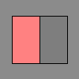
(no-stroke) (color-mode 'hsb 360 100 100)
(for ([x 100]) (stroke 0 x 100) (line x 0 x 50)) "Red with saturation levels from from 0 to 100 percent."
Usage
(saturation rgb)
Arguments
rgb |
| A color value. |
Description
Computes the saturation value of a color.
The saturation component is a value from 0 to the maximum saturation level. Often the maximum saturation level is set to 1. or 100 as one tends to think of saturation levels as percentages. Use color-mode to change the default range.
2.1.8 brightness
Name: brightness
Computes the brightness value of a color.
Examples
> (color-mode 'hsb 255) > (define c (color 0 126 255)) > (brightness c) 255
(fill c) (rect 15 20 35 60) (fill (brightness c)) (rect 50 20 35 60)

(no-stroke) (color-mode 'hsb 360 100 100)
(for ([x 100]) (stroke 0 100 x) (line x 0 x 50)) "Red with brightness levels from from 0 to 100 percent."
Usage
(brightness rgb)
Arguments
rgb |
| A color value. |
Description
Computes the brightness value of a color.
The brightness component is a value from 0 to the maximum brightness level. Often the maximum brightness level is set to 1. or 100 as one tends to think of brightness levels as percentages. Use color-mode to change the default range.
2.1.9 fill
Name: fill
Sets the color used to fill shapes.
Examples
> (fill 153) > (rect 15 20 70 60) 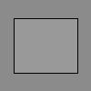
> (fill 204 102 0) > (rect 15 20 70 60) 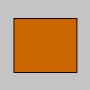
> (fill "#ccffaa") > (rect 15 20 70 60) 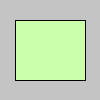
Usage
(fill rgb)
(fill rgb alpha)
(fill gray)
(fill gray alpha)
(fill v1 v2 v3)
(fill v1 v2 v3 alpha)
(fill image)
Arguments
rgb |
| A color value. |
alpha |
| An alpha level. |
gray |
| An integer. |
v1 |
| Red or hue value. |
v2 |
| Green or saturation value. |
v3 |
| Blue or brightness value. |
If the color mode is rgb, then the values v1, v2, v3 are rgb-values.
If the color mode is hsb, then the values v1, v2, v3 are hsb-values.
Description
Sets the color used to fill shapes. For example, if you run (fill 204 102 0), all subsequent shapes will be filled with orange. This color is either specified in terms of the RGB or HSB color depending on the current color-mode. The default color space is RGB, with each value in the range from 0 to 255.
When using hexadecimal notation to specify a color, use a string beginning with "#" (e.g., "#ccffaa" or "#44ccffaa"). If six digits are used to specify a color (just as colors are typically specified in HTML and CSS). The alpha level is then set to maximum.
If eight digits are used, the first two characters define the alpha component, and the remainder define the red, green, and blue components.
The value for the "gray" parameter must be less than or equal to the current maximum value as specified by color-mode. The default maximum value is 255.
To change the color of the outline, use stroke.
To change the color of an image, use tint.
Use no-fill to turn off filling.
2.1.10 stroke
Name: stroke
Sets the color used to draw lines and borders around shapes.
Examples
> (stroke 153) > (rect 15 20 70 60)
> (stroke 204 102 0) > (rect 15 20 70 60) 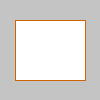
> (stroke "#ccffaa") > (rect 15 20 70 60)

Usage
(stroke rgb)
(stroke rgb alpha)
(stroke gray)
(stroke gray alpha)
(stroke v1 v2 v3)
(stroke v1 v2 v3 alpha)
(stroke image)
Arguments
rgb |
| A color value. |
alpha |
| An alpha level. |
gray |
| An integer. |
v1 |
| Red or hue value. |
v2 |
| Green or saturation value. |
v3 |
| Blue or brightness value. |
If the color mode is rgb, then the values v1, v2, v3 are rgb-values.
If the color mode is hsb, then the values v1, v2, v3 are hsb-values.
Description
Sets the color used to draw lines and borders around shapes. For example, after (stroke 204 102 0), all subsequent shapes will be filled with orange. This color is either specified in terms of the RGB or HSB color depending on the current color-mode. The default color space is RGB, with each value in the range from 0 to 255.
When using hexadecimal notation to specify a color, use a string beginning with "#" (e.g., "#ccffaa" or "#44ccffaa"). If six digits are used to specify a color (just as colors are typically specified in HTML and CSS). The alpha level is set to maximum.
If eight digits are used, the first two characters define the alpha component, and the remainder define the red, green, and blue components.
The value for the "gray" parameter must be less than or equal to the current maximum value as specified by color-mode. The default maximum value is 255.
To change the color inside a shape, use fill.
Use no-stroke to turn off outline drawing.
2.1.11 no-fill
Name: no-fill
Disables filling of shapes.
Examples
> (fill 255) > (rect 15 20 55 55) > (no-fill) > (rect 30 35 55 55) 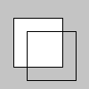
Usage
(no-fill)
Description
Disables filling of shapes. If both no-stroke and no-fill are called, nothing will be drawn to the screen.
2.1.12 no-stroke
Name: no-stroke
Disables drawing the stroke (outline).
Examples
> (fill 255) > (no-stroke) > (rect 20 20 60 60)

Usage
Description
Disables drawing the stroke (outline). If both no-stroke and no-fill are called, nothing will be drawn to the screen.
2.1.13 color-mode
Name: color-mode
Sets the color mode to rgb or hsb.
Examples
> (no-stroke) > (color-mode 'rgb 100)
> (for ([i 100]) (for ([j 100]) (stroke i j 0) (point i j))) 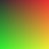
> (no-stroke) > (color-mode 'hsb 100)
> (for ([i 100]) (for ([j 100]) (stroke i j 0) (point i j))) 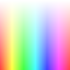
Usage
(color-mode mode)
(color-mode mode max)
(color-mode mode max1 max2 max3)
(color-mode mode max1 max2 max3 maxA)
Arguments
mode |
| 'rgb or 'hsb corresponding to red/greeb/blue or huse/saturation/brightness |
max |
| maximum value for all color elements |
max1 |
| maximum value for the red value or hue value according to the mode |
max2 |
| maximum value for the green value or saturation value according to the mode |
max3 |
| maximum value for the blue value or brightness value according to the mode |
maxA |
| maximum value for the alpha value |
Description
Changes the way Sketching interprets color data. By default, the parameters for fill, stroke, background, and color are defined by values between 0 and 255 using the RGB color model. The color-mode function is used to change the numerical range used for specifying colors and to switch color systems. For example, calling (color-mode 'rgb 1.0) will specify that values are specified between 0 and 1. The limits for defining colors are altered by setting the parameters max, max1, max2, max3, and maxA.
After changing the range of values for colors, in expressions like (color-mode 'hsb 360 100 100), those ranges remain in use until they are explicitly changed again. For example, after running (color-mode 'hsb 360 100 100) and then changing back to (color-mode 'rgb), the range for R will be 0 to 360 and the range for G and B will be 0 to 100. To avoid this, be explicit about the ranges when changing the color mode. For instance, instead of (color-mode 'rgb), write (color-mode 'rgb 255 255 255).
2.1.14 lerp-color
Name: lerp-color
Calculates a color between two colors at a specific increment.
Examples
> (stroke 255) > (background 51) > (define from (color 204 102 0)) > (define to (color 0 102 153)) > (define interA (lerp-color from to 0.33)) > (define interB (lerp-color from to 0.66)) > (fill from) > (rect 10 20 20 60) > (fill interA) > (rect 30 20 20 60) > (fill interB) > (rect 50 20 20 60) > (fill to) > (rect 70 20 20 60)
Usage
(lerp-color color1 color22 amount)
Arguments
color1 |
| interpolate from this color |
color2 |
| interpolate to this color |
amount |
| value between 0.0 and 1.0 |
Description
Calculates a color between two colors at a specific increment. The amount argument is the amount to interpolate between the two values where 0.0 is equal to the first point, 0.1 is very near the first point, 0.5 is halfway in between, etc.
An amount below 0 will be treated as 0. Likewise, amounts above 1 will be capped at 1. This is different from the behavior of lerp, but necessary because otherwise numbers outside the range will produce strange and unexpected colors.
2.2 2D Primitives
2.2.1 arc
Name: arc
Draws an arc to the screen.
Examples
> (stroke 0) > (fill 255) > (arc 50 55 50 50 0 π/2) > (no-fill) > (arc 50 55 60 60 π/2 π) > (arc 50 55 70 70 π (+ π π/4)) > (arc 50 55 80 80 (+ π π/4) 2π) > (arc 50 55 80 80 (+ π π/4) 2π) 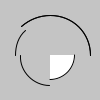
> (arc 50 50 80 80 0 (* 5/4 pi) 'open-pie) 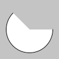
> (arc 50 50 80 80 0 (* 5/4 pi) 'pie) 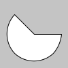
> (arc 50 50 80 80 0 (* 5/4 pi) 'open) 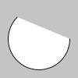
> (arc 50 50 80 80 0 (* 5/4 pi) 'chord)

Usage
(arc a b c d start stop)
(arc a b c d start stop mode)
Arguments
a |
| x-coordinate of the arc's ellipse |
b |
| y-coordinate of the arc's ellipse |
c |
| width of the arc's ellipse by default |
d |
| height of the arc's ellipse by default |
start |
| angle to start the arc, specified in radians |
stop |
| angle to stop the arc, specified in radians |
mode |
| one of: 'open-pie 'pie 'open 'chord |
Description
Draws an arc to the screen. Arcs are drawn along the outer edge of an ellipse defined by the a, b, c, and d parameters. The center of the arc’s ellipse may be changed with the ellipse-mode function. Use the start and stop parameters to specify the angles (in radians) at which to draw the arc. The start/stop values must be in clockwise order.
There are three ways to draw an arc; the rendering technique used is defined by the optional seventh parameter. The four options, depicted in the above examples, are 'open-pie. 'pie, 'open, and 'chord. The default mode is 'open-pie (open stroke with pie fill).
2.2.2 circle
Name: circle
Draws a circle to the screen.
Examples
> (circle 56 46 55) 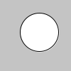
Usage
(circle x y extent)
Arguments
x |
| x-coordinate of the arc's ellipse |
y |
| y-coordinate of the arc's ellipse |
extent |
| width of the arc's ellipse by default |
Description
Draws a circle to the screen. By default, the first two parameters set the location of the center, and the third sets the shape’s width and height. The center may be changed with the ellipse-mode function.
2.2.3 ellipse
Name: ellipse
Draws an ellipse to the screen.
Examples
> (ellipse 50 50 75 55) 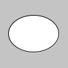
Usage
(ellipse a b c d)
Arguments
The default interpretation of the arguments is:
a |
| x-coordinate of the arc's ellipse |
b |
| y-coordinate of the arc's ellipse |
c |
| width of the arc's ellipse by default |
d |
| height of the arc's ellipse by default |
The interpretation of the arguments is affected by ellipse-mode.
Description
Draws an ellipse (oval) to the screen. An ellipse with equal width and height is a circle. By default, the first two parameters set the location, and the third and fourth parameters set the shape’s width and height. The center may be changed with the ellipse-mode function.
2.2.4 line
Name: line
Draws a line to the screen.
Examples
> (line 30 20 85 75) 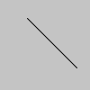
> (line 30 20 85 20) > (stroke 126) > (line 85 20 85 75) > (stroke 255) > (line 85 75 30 75) 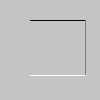
Usage
(line x1 y1 x2 y2)
Arguments
x1 |
| x-coordinate of the first point |
y1 |
| y-coordinate of the first point |
x2 |
| x-coordinate of the second point |
y2 |
| y-coordinate of the second point |
Description
Draws a line (a direct path between two points) to the screen. To color a line, use the stroke function. A line cannot be filled, therefore the fill function will not affect the color of a line. Lines are drawn with a width of one pixel by default, but this can be changed with the stroke-weight function.
2.2.5 point
Name: point
Draws a point to the screen.
Examples
> (no-smooth) > (point 30 20) > (point 85 20) > (point 85 75) > (point 30 75)

> (no-smooth) > (stroke-weight 10) > (stroke-cap 'round) > (point 20 50) > (stroke-cap 'projecting) > (point 50 50) > (stroke-cap 'butt) > (point 80 50) 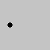
> (stroke-weight 10) > (stroke-cap 'round) > (point 20 50) > (stroke-cap 'projecting) > (point 50 50) > (stroke-cap 'butt) > (point 80 50)
Usage
(point x y)
Arguments
x |
| x-coordinate of the point |
y |
| y-coordinate of the point |
Description
Draws a point, a coordinate in space at the dimension of one pixel. The first parameter is the horizontal value for the point, the second value is the vertical value for the point.
Use stroke to set the color of the point.
Point appears round with the default (stroke-cap 'round) and square with (stroke-cap 'projecting). Points are invisible with stroke-cap 'square (no cap).
2.2.6 quad
Name: quad
Draws a quadrilateral (a four-sided polygon) to the screen.
Examples
> (quad 38 31 86 20 69 63 30 76) 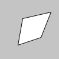
Usage
(quad x1 y1 x2 y2 x3 y3 x4 y4)
Arguments
x1 |
| x-coordinate of the first corner |
y1 |
| y-coordinate of the first corner |
x2 |
| x-coordinate of the second corner |
y2 |
| y-coordinate of the second corner |
x3 |
| x-coordinate of the third corner |
y3 |
| y-coordinate of the third corner |
x4 |
| x-coordinate of the fourth corner |
y4 |
| y-coordinate of the fourth corner |
Description
Draws a quadrilateral (a four-sided polygon) to the screen.
A quad is a quadrilateral, a four sided polygon. It is similar to a rectangle, but the angles between its edges are not constrained to ninety degrees. List the points either in clockwise or counter-clockwise ordner around the defined shape.
2.2.7 rect
Name: rect
Draws a rectangle to the screen.
Examples
> (rect 30 20 55 55) 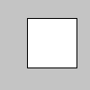
> (rect 30 20 55 55 7) 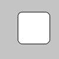
Usage
(rect a b c d)
(rect a b c d r)
Arguments
The default interpretation of the arguments is:
a |
| x-coordinate of corner |
b |
| y-coordinate of corner |
c |
| width |
d |
| height |
r |
| radii for all four corners |
The interpretation of the arguments is affected by rect-mode.
Description
Draws a rectangle to the screen. A rectangle is a four-sided shape with every angle at ninety degrees. By default, the first two arguments set the location of the upper-left corner, the third sets the width, and the fourth sets the height. The way these arguments are interpreted, however, may be changed with the rect-mode function.
To draw a rounded rectangle, add a fifth argument, which is used as the radius value for all four corners.
To use a different radius value for each corner, use eight argument. When using eight parameters, the latter four set the radius of the arc at each corner separately, starting with the top-left corner and moving clockwise around the rectangle.
2.2.8 square
Name: square
Draws a square to the screen.
Example
> (square 30 20 55)

Usage
(square x y extent)
Arguments
The default interpretation of the arguments is:
x |
| x-coordinate of corner |
y |
| y-coordinate of corner |
extent |
| length of side |
The interpretation of the arguments is affected by rect-mode.
Description
Draws a square to the screen. A square is a four-sided shape with every angle at ninety degrees and each side is the same length. By default, the first two arguments set the location of the upper-left corner, the third sets the width and height. The way these arguments are interpreted, however, may be changed with the rect-mode function.
2.2.9 triangle
Name: triangle
Draws a triangle to the screen.
Example
> (triangle 30 75 58 20 86 75) 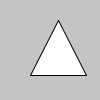
Usage
(triangle x1 y1 x2 y2 x3 y3)
Arguments
x1 |
| x-coordinate of the first corner |
y1 |
| y-coordinate of the first corner |
x2 |
| x-coordinate of the second corner |
y2 |
| y-coordinate of the second corner |
x3 |
| x-coordinate of the third corner |
y3 |
| y-coordinate of the third corner |
Description
A triangle is a shape created by connecting three points. The first two arguments specify the first point, the middle two arguments specify the second point, and the last two arguments specify the third point.
2.3 Curves
2.3.1 bezier
Name: bezier
Draws a Bezier curve to the screen.
Examples
> (no-fill) > (stroke 255 102 0) > (line 85 20 10 10) > (line 90 90 15 80) > (stroke 0 0 0) > (bezier 85 20 10 10 90 90 15 80) 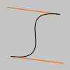
> (no-fill) > (stroke 255 102 0) > (line 30 20 80 5) > (line 80 75 30 75) > (stroke 0 0 0) > (bezier 30 20 80 5 80 75 30 75) 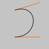
Usage
(bezier x1 y1 x2 y2 x3 y3 x4 y4)
Arguments
x1 |
| x-coordinate of the first anchor point |
y1 |
| y-coordinate of the first anchor point |
x2 |
| x-coordinate of the second control point |
y2 |
| y-coordinate of the second control point |
x3 |
| x-coordinate of the third control point |
y3 |
| y-coordinate of the third control point |
x4 |
| x-coordinate of the fourth anchor point |
y4 |
| y-coordinate of the fourth anchor point |
Description
Draws a Bezier curve on the screen. These curves are defined by a series of anchor and control points. The first two parameters specify the first anchor point and the last two parameters specify the other anchor point. The middle parameters specify the control points which define the shape of the curve. Bezier curves were developed by French engineer Pierre Bezier.
2.4 Attributes
2.4.1 ellipse-mode
Name: ellipse-mode
Modifies the location from which ellipses are drawn.
Examples
> (ellipse-mode 'radius) > (fill "white") > (ellipse 50 50 30 30) > (ellipse-mode 'center) > (fill "darkgray") > (ellipse 50 50 30 30)
> (ellipse-mode 'corner) > (fill "white") > (ellipse 25 25 50 50) > (ellipse-mode 'corners) > (fill "darkgray") > (ellipse 25 25 50 50)

Usage
(ellipse-mode mode)
Arguments
mode |
| one of: 'center 'radius 'corner 'corners |
Description
Modifies the location from which ellipses are drawn by changing the way in which arguments given to ellipse are intepreted.
The default mode is (ellipse-mode 'center), which interprets the first two parameters of ellipse as the shape’s center point, while the third and fourth arguments are its width and height.
(ellipse-mode 'radius) also uses the first two arguments of ellipse as the shape’s center point, but uses the third and fourth arguments to specify half of the shapes’s width and height.
(ellipse-mode 'corner) interprets the first two arguments of ellipse as the upper-left corner of the shape, while the third and fourth arguments are its width and height.
(ellipse-mode 'corners) interprets the first two arguments of ellipse as the location of one corner of the ellipse’s bounding box, and the third and fourth arguments as the location of the opposite corner.
2.4.2 rect-mode
Name: rect-mode
Modifies the location from which rectangles and squares are drawn.
Examples
> (rect-mode 'corner) > (fill "white") > (rect 25 25 50 50) > (rect-mode 'corners) > (fill "darkgray") > (rect 25 25 50 50) 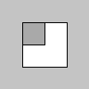
> (rect-mode 'radius) > (fill "white") > (rect 50 50 30 30) > (rect-mode 'center) > (fill "darkgray") > (rect 50 50 30 30) 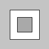
Usage
(rect-mode mode)
Arguments
mode |
| one of: 'center 'radius 'corner 'corners |
Description
Modifies the location from which rectangles and squares are drawn by changing the way in which arguments given to rect and square are intepreted.
The default mode is (rect-mode 'corner), which interprets the first two arguments of rect as the upper-left corner of the shape, while the third and fourth arguments are its width and height.
(rect-mode 'corners) interprets the first two arguments of rect as the location of one corner, and the third and fourth arguments as the location of the opposite corner.
(rect-mode 'center) interprets the first two arguments of rect as the shape’s center point, while the third and fourth arguments are its width and height.
(rect-mode 'radius) also uses the first two arguments of rect as the shape’s center point, but uses the third and fourth arguments to specify half of the shapes’s width and height.
2.4.3 stroke-cap
Name: stroke-cap
Sets the style for rendering line endings.
Examples
> (stroke-weight 12) > (stroke-cap 'round) > (line 20 30 80 30) > (stroke-cap 'square) > (line 20 50 80 50) > (stroke-cap 'project) > (line 20 70 80 70)
Usage
(stroke-cap cap)
Arguments
cap |
| one of: 'round 'square 'project |
Description
Sets the style for rendering line endings. These ends are either squared, extended, or rounded, each of which specified with the corresponding parameters: 'square, 'project, and 'round. The default cap is 'round.
To make point appear square, use (stroke-cap 'project). Using (stroke-cap 'square) (no cap) causes points to become invisible.
2.4.4 stroke-join
Name: stroke-join
Sets the style of the joints which connect line segments.
Examples
> (no-fill) > (stroke-weight 12) > (stroke-join 'miter) > (begin-shape) > (vertex 35 20) > (vertex 65 50) > (vertex 35 80) > (end-shape)
> (no-fill) > (stroke-weight 12) > (stroke-join 'bevel) > (begin-shape) > (vertex 35 20) > (vertex 65 50) > (vertex 35 80) > (end-shape)
> (no-fill) > (stroke-weight 12) > (stroke-join 'round) > (begin-shape) > (vertex 35 20) > (vertex 65 50) > (vertex 35 80) > (end-shape)
Usage
(stroke-join join)
Arguments
join |
| one of: 'miter 'bevel 'round |
Description
Sets the style of the joints which connect line segments. These joints are either mitered, beveled, or rounded and specified with the dcorresponding parameters 'miter, 'bevel and 'round. The default joint is 'miter.
2.4.5 stroke-weight
Name: stroke-weight
Sets the width of the stroke used for lines, points, and the border around shapes.
Examples
> (stroke-weight 1) > (line 20 20 80 20) > (stroke-weight 4) > (line 20 40 80 40) > (stroke-weight 10) > (line 20 70 80 70) > (line 20 70 80 70)
Usage
(stroke-weight weight)
Arguments
weight |
| the weight (in pixels) of the stroke |
Description
Sets the width of the stroke used for lines, points, and the border around shapes. All widths are set in units of pixels.
The default stroke weight is 1.
2.5 Shapes
2.5.1 begin-shape
Name: begin-shape
Starts recording points used to draw a complex shape.
Examples
> (begin-shape) > (vertex 30 20) > (vertex 85 20) > (vertex 85 75) > (vertex 30 75) > (end-shape 'close)

> (begin-shape) > (vertex 30 20) > (vertex 85 20) > (vertex 85 75) > (vertex 30 75) > (end-shape)

> (no-fill) > (begin-shape) > (vertex 30 20) > (vertex 85 20) > (vertex 85 75) > (vertex 30 75) > (end-shape)

> (begin-shape 'points) > (vertex 30 20) > (vertex 85 20) > (vertex 85 75) > (vertex 30 75) > (end-shape) 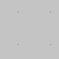
> (begin-shape 'lines) > (vertex 30 20) > (vertex 85 20) > (vertex 85 75) > (vertex 30 75) > (end-shape) 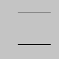
> (begin-shape 'triangles) > (vertex 30 75) > (vertex 40 20) > (vertex 50 75) > (vertex 60 20) > (vertex 70 75) > (vertex 80 20) > (end-shape) 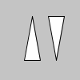
> (begin-shape 'triangle-strip) > (vertex 30 75) > (vertex 40 20) > (vertex 50 75) > (vertex 60 20) > (vertex 70 75) > (vertex 80 20) > (end-shape) 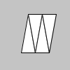
> (begin-shape 'triangle-fan) > (vertex 50 50) > (vertex 50 15) > (vertex 85 50) > (vertex 50 85) > (vertex 15 50) > (vertex 50 15) > (end-shape) 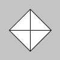
> (begin-shape 'quads) > (vertex 30 20) > (vertex 30 75) > (vertex 50 75) > (vertex 50 20) > (vertex 65 20) > (vertex 65 75) > (vertex 85 75) > (vertex 85 20) > (end-shape) 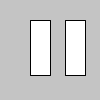
> (begin-shape 'quad-strip) > (vertex 30 20) > (vertex 30 75) > (vertex 50 75) > (vertex 50 20) > (vertex 65 20) > (vertex 65 75) > (vertex 85 75) > (vertex 85 20) > (end-shape)
> (begin-shape) > (vertex 20 20) > (vertex 40 20) > (vertex 40 40) > (vertex 60 40) > (vertex 60 60) > (vertex 20 60) > (end-shape 'close) 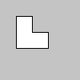
Usage
Description
Starts recording points used to draw a complex shape. Use the vertex functions to add points to the shape. When all points are added, use end-shape to draw the shape.
2.5.2 end-shape
Name: end-shape
Draws the current shape to the screen - and stops the recording of points.
Examples
> (begin-shape) > (vertex 30 20) > (vertex 85 20) > (vertex 85 75) > (vertex 30 75) > (end-shape 'close)

> (begin-shape) > (vertex 30 20) > (vertex 85 20) > (vertex 85 75) > (vertex 30 75) > (end-shape)

> (no-fill) > (begin-shape) > (vertex 30 20) > (vertex 85 20) > (vertex 85 75) > (vertex 30 75) > (end-shape)

Usage
mode |
| 'close |
Description
Draws the current shape to the screen - and stops the recording of points. The function end-shape may only be called after begin-shape. When end-shape is called, all data recorded since the last call to begin-shape is drawn to the screen.
If the mode 'close is used, the shape will be close (the end and start point will be connected).
2.5.3 vertex
Name: vertex
Add a point to the current shape.
Examples
> (begin-shape) > (vertex 30 20) > (vertex 85 20) > (vertex 85 75) > (vertex 30 75) > (end-shape 'close)

> (begin-shape) > (vertex 30 20) > (vertex 85 20) > (vertex 85 75) > (vertex 30 75) > (end-shape) 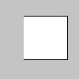
> (no-fill) > (begin-shape) > (vertex 30 20) > (vertex 85 20) > (vertex 85 75) > (vertex 30 75) > (end-shape)

Usage
(vertex x y)
x |
| x-coordinate of the point |
y |
| y-coordinate of the point |
Description
Add the point (x,y) to the current shape. The vertex functions must be called between begin-shape and end-shape.
2.6 Typography
2.6.1 text
Name: text
Draws text to the screen.
Examples
> (text-size 32) > (fill 255) > (text "word" 10 30) > (fill 0 102 153) > (text "word" 10 60) > (fill 0 102 153 51) > (text "word" 10 90)
; Pass width and height in order to draw multi line text. > (text-size 11) > (fill 0) > (define s "The quick brown fox jumps over the lazy dog.") > (text s 10 10 70 80) 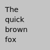
Usage
(text s x y)
(text s x1 y1 x2 y2)
s |
| a string |
x |
| x-coordinate |
y |
| y-coordinate |
x1 |
| x-coordinate |
y1 |
| y-coordinate |
x2 |
| number |
y2 |
| number |
The interpretation of the arguments is affected by rect-mode.
Description
Draws text to the screen.
If text is used as (text s x y) then the point (x ,y) determines the position of the text. How the text is placed relative to this point is determined by the alignment settings made by text-align.
If text is used as (text s x1 y1 x2 y2) then the point (x1 ,y1) and the numbers x2 and y2 are interpreted according to the mode set by rect-mode. In the default mode, x2 and y2 are width and height.
Only the text that fits completely inside the rectangular area is drawn to screen.
Use fill to change the color of the text.
2.6.2 text-align
Name: text-align
Sets the horizontal and vertical alignment for drawing text.
Examples
> (background 0) > (fill 255) > (text-size 16) > (text-align 'right) > (text "ABCD" 50 30) > (text-align 'center) > (text "EFGH" 50 50) > (text-align 'left) > (text "IJKL" 50 70) 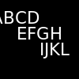
> (background 0) > (stroke 153) > (fill 255) > (text-size 11) > (text-align 'center 'bottom) > (line 0 20 width 20) > (text "center, bottom" 50 20) > (text-align 'center 'center) > (line 0 40 width 40) > (text "center, center" 50 40) > (text-align 'center 'top) > (line 0 60 width 60) > (text "center, top" 50 60) > (text-align 'center 'baseline) > (line 0 90 width 90) > (text "center, baseline" 50 90) 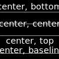
Usage
(text-align x-alignment)
(text-align x-alignment y-alignment)
x-alignment |
| one of 'left 'center 'right |
y-alignment |
| one of 'top 'center 'bottom 'baseline |
Description
Sets the horizontal and vertical alignment for drawing text.
The x-alignment can be one of the symbols 'left, 'center and 'right. The setting affects how text draws the text relative to the position given to text.
The optional second argument y-alignment is used to vertically align the text. If the second argument isn’t used, then the vertical alignment will be set to the default value 'baseline.
The settings 'top, 'center, 'bottom and 'baseline will put the position given to text such that the position is at the top of, center of, bottom of, or, at the baseline of the text respectively. This applies when text is used to draw a single text line with (text s x y).
For multiple line text drawn with (text s x1 y1 x2 y2) the alignment applies to the individual lines inside the rectangular area given by the arguments. When used for multiple lines of text the vertical alignment 'baseline is not available.
The vertical alignment is based on the value on the ascent specified in the font. Some fonts do not specify this correctly, so sometime you will need to adjust the y-coordinate with a few pixels manually.
2.6.3 text-size
Name: text-size
Sets the font size.
Examples
> (background 0) > (fill 255) > (text-size 26) > (text "WORD" 10 50) > (text-size 14) > (text "WORD" 10 70)
Usage
(text-size size)
size |
| the size (measured in pixels as default) |
Description
Sets the font size.
2.6.4 text-face
Name: text-face
Sets the font face. Examples of font faces: "Courier", "Arial".
Examples
> (background 0) > (fill 255) > (text-size 30) > (text-align 'center 'center) > (text-face "Times") > (text "Word" 50 50)
Usage
(text-face face)
face |
| string: a font face |
Description
Sets the font face. Some well-known font faces are "Courier" and "Arial". The format and meaning of the font faces are platform- and device-specific.
2.6.5 text-family
Name: text-family
Sets the font family.
Examples
> (background 0) > (fill 255) > (text-size 30) > (text-align 'center 'center) > (text-face #f) > (text-family 'roman) > (text "word" 50 20) > (text-family 'decorative) > (text "word" 50 50) > (text-family 'modern) > (text "word" 50 80)
Usage
(text-family family)
family |
| string: a font family |
Description
Sets the font family. The available families are: 'default, 'decorative, 'roman, 'script, 'swiss, 'modern, 'symbol, 'system.
If the font face is #f then the font appearance is determined solely by the font family.
2.6.6 text-weight
Name: text-weight
Sets the font weight.
Examples
> (background 0) > (fill 255) > (text-size 30) > (text-align 'center 'center) > (text-weight 'normal) > (text "word" 50 30) > (text-weight 'bold) > (text "word" 50 70)
Usage
(text-weight weight)
weight |
| a number between 100 and 1000, or |
| one of the weight symbols |
Description
Sets the font weight. The available font weights are listed in the document for font%.
2.6.7 text-underlined?
Name: text-underlined?
Sets whether the text is underlined or not.
Examples
> (background 0) > (fill 255) > (text-size 30) > (text-align 'center 'center) > (text-underlined? #t) > (text "word" 50 30) > (text-underlined? #f) > (text "word" 50 70)
Usage
(text-underlined? underlined?)
underlined? |
| boolean: #t or #f |
Description
Sets whether the text is underlined or not.
2.6.8 text-smoothing
Name: text-smoothing
Sets the amount of smoothing.
Examples
> (background 0) > (fill 255) > (text-size 30) > (text-align 'center 'center) > (text-smoothing 'unsmoothed) > (text "word" 50 30) > (text-smoothing 'smoothed) > (text "word" 50 70)
Usage
(text-smoothing smoothing)
smoothing |
| one of: 'default 'partly-smoothed 'smoothed 'unsmoothed |
Description
Sets the amount of smoothing.
2.6.9 text-size-in-pixels?
Name: text-size-in-pixels?
Sets whether the font size is specified in pixels or in logical drawing units. For non-high-resolution screens this is the same.
Examples
> (background 0) > (fill 255) > (text-size-in-pixels? #t) > (text-size 30) > (text-align 'center 'center) > (text "word" 50 30) > (text-size-in-pixels? #f) > (text-size 30) > (text "word" 50 70) 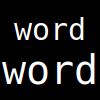
Usage
(text-size-in-pixels? pixels?)
pixels? |
| boolean: one of #f or #f |
Description
Sets whether text-size uses pixels or logical drawing units.
2.6.10 text-hinting
Name: text-hinting
Sets whether the font metrics should be rounded to integers.
Usage
(text-hinting hint)
hint |
| one of: 'aligned 'unaligned |
Description
Sets whether the font metrics should be rounded to integers. The default is 'unaligned which improves the consistency of letter spacing for pixel-based targets, but at the expense of making metrics unscalable.
2.7 Image
2.7.1 image
Name: image
Draws an image on the canvas.
Examples
> (define img (load-image "laDefense.jpg")) > (image img 0 0)

Usage
(image img x y)
img |
| a bitmap image |
x |
| x-coordinate |
y |
| y-coordinate |
The interpretation of the arguments is affected by image-mode.
Description
Draws an image on the canvas.
The function image draws an image on the canvas. You can use image formats such as gif, jpeg and png.
The img argument specifies the image to display and by default the x1 and y1 arguments define the location of its upper-left corner. The function image-mode can be used to change the way these arguments are interpreted.
The color of an image may be modified with the function tint. This function will maintain transparency for gif and png images.
2.7.2 image-width
Name: image-width
Returns the width of an image.
Examples
> (define img (load-image "moonwalk.jpg")) > (image img 0 0)
> (image-width img) 1

Usage
(image-width img)
img |
| a bitmap image |
Description
Returns the width of an image (bitmap).
2.7.3 image-height
Name: image-height
Returns the height of an image.
Examples
> (define img (load-image "moonwalk.jpg")) > (image img 0 0) > (image-height img) 1
Usage
(image-height img)
img |
| a bitmap image |
Description
Returns the height of an image (bitmap).
2.7.4 image-mode
Name: image-mode
Modifies the location from which images (bitmaps) are drawn.
Examples
Usage
(image-mode mode)
Arguments
mode |
| one of: 'center 'corner 'corners |
Description
Modifies the location from which images (bitmaps) are drawn by changing the way in which arguments given to image are intepreted.
The default mode is (image-mode 'corner), which interprets the first two arguments of image as the upper-left corner of the shape, while the third and fourth arguments are its width and height.
(image-mode 'corners) interprets the first two arguments of image as the location of one corner, and the third and fourth arguments as the location of the opposite corner.
(image-mode 'center) interprets the first two arguments of image as the shape’s center point, while the third and fourth arguments are its width and height.
2.8 Data
2.8.1 color
Name: color
Datatype for storing color values.
Examples
> (define c1 (color 204 153 0)) > (define c2 "#ffcc00") > (no-stroke) > (fill c1) > (rect 0 0 25 100) > (fill c2) > (rect 25 0 25 100) > (rect 50 0 50 100)
Usage
(color r g b)
(color r g b a)
(color h s b)
(color h s b a)
"#rrggbb"
"#rrggbbaa"
colorname
r |
| red component (default range: 0-255) |
g |
| green component (default range: 0-255) |
b |
| blue component (default range: 0-255) |
a |
| alpha component (default range: 0-255) |
h |
| hue component (default range: 0-255) |
s |
| saturation component (default range: 0-255) |
v |
| brightness component (default range: 0-255) |
"#rrggbb" |
| hexadecimal string |
colorname |
| colorname as a string or symbol |
Description
Datatype for storing color values. Colors may be assigned with get and color or they may be specified directly using hexadecimal notation such as "#ffcc00" or "#ffffcc00".
2.9 Time and Date
2.9.1 day
Name: day
Returns current day as a number from 1 to 31.
Examples
> (day) 13
Usage
(day)
Description
Returns the current day as a number from 1 to 31.
If you need the corresponding string, use ~a or number->string to convert the number to a string.
2.9.2 hour
Name: hour
Returns the current hour as a number from 0 to 23.
Examples
> (hour) 14
Usage
(hour)
Description
Returns the current hour as a number from 0 to 23.
If you need the corresponding string, use ~a or number->string to convert the number to a string.
2.9.3 millis
Name: millis
Returns the number of milliseconds since starting the program.
Examples
> (millis) 20
Usage
(millis)
Description
Returns the number of milliseconds since starting the program.
If you need the corresponding string, use ~a or number->string to convert the number to a string.
2.9.4 minute
Name: minute
Returns the current minutes as a number from 0 to 59.
Examples
> (minute) 2
Usage
(minute)
Description
Returns the current minutes as a number from 0 to 59.
If you need the corresponding string, use ~a or number->string to convert the number to a string.
2.9.5 month
Name: month
Returns the current month as a number from 1 to 12.
Examples
> (month) 2
Usage
(month)
Description
Returns the current month as a number from 1 to 12.
If you need the corresponding string, use ~a or number->string to convert the number to a string.
2.9.6 second
Name: second
Returns the current second as a number from 0 to 59.
Examples
> (second) 54
Usage
(second)
Description
Returns the current second as a number from 0 to 59.
If you need the corresponding string, use ~a or number->string to convert the number to a string.
2.9.7 year
Name: year
Returns the current year as a number.
Examples
> (year) 2022
Usage
(year)
Description
Returns the current year as a number.
If you need the corresponding string, use ~a or number->string to convert the number to a string.
2.10 Transform
2.10.1 rotate
Name: rotate
Rotates the coordinate system around the origin.
Examples
; place the origin in the center of the screen > (translate (/ width 2) (/ height 2)) ; rotate π/3 radians (60 degrees) > (rotate (/ π 3)) > (rect -26 -26 52 52) 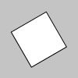
; place the origin in the center of the screen > (translate (/ width 2) (/ height 2)) ; flip the y-axis (now standard orientation) > (scale 1 -1) > (fill 255) > (rect -26 -26 52 52) > (fill "red") ; rotate 10 degrees > (rotate (radians 10)) > (rect -26 -26 52 52) 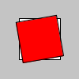
Usage
(rotate angle)
Arguments
angle |
| the angle of rotation (in radians) |
Description
Rotates the coordinate system around the origin. The argument angle determines the amount to rotate. The angle is measured in radians (from 0 to 2π). Use the function radians to convert angles in degrees to radians.
The coordinate system is in the direction from the x-axis to the y-axis. With the default screen coordinate system this looks like a clockwise rotation. If the direction of the x-axis is flipped (so we have a standard mathematical coordinate system), the rotation is in the standard counter clockwise direction.
The coordinate system is rotated around the origin, so use translate to change the origin to the point of revolution before calling rotate.
Transformations apply to everything that happens afterward, and subsequent calls to the function compound the effect. For example, calling (rotate (/ pi 2)) once and then calling (rotate (/ pi 2)) a second time is the same as a single (rotate pi). All tranformations are reset when draw begins again.
Technically, rotate multiplies the current transformation matrix by a rotation matrix. This function can be further controlled by push-matrix and pop-matrix.
2.10.2 scale
Name: scale
Changes the scales of the x- and y-axis.
Examples
> (fill "white") > (rect 30 20 50 50) ; use different scales on the axes > (scale 0.5 1.3) > (fill "red") > (rect 30 20 50 50) 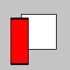
Usage
Arguments
s |
| the scale factor for both x and y |
sx |
| the scale factor for x |
sy |
| the scale factor for y |
Description
Changes the scales of the x- and y-axis. A scale factor greater than 1 will increase the size of objects drawn and a scale factor between 0 and 1 will decrease the size. The two argument call (scale sx sy) can be used to get different scale of the two axes.
Transformations apply to everything that happens afterward, and subsequent calls to the function compound the effect. For example, calling (scale 2) once and then calling (scale 3) a second time is the same as a single (scale 6). All tranformations are reset when draw begins again.
Technically, scale affects the current transformation matrix. This function can be further controlled by push-matrix and pop-matrix.
2.10.3 translate
Name: translate
Moves the origin.
Examples
> (translate 30 20) > (rect 0 0 55 55)

; draw rectagnel at orignal (0,0) i.e. top-left > (rect 0 0 55 55) ; move the origin to (30,20) then draw rectangle > (fill "red") > (translate 30 20) > (rect 0 0 55 55) 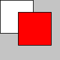
Usage
(translate tx ty)
Arguments
tx |
| the x-coordinate (in the current coordinate system) of the new origin |
ty |
| the y-coordinate (in the current coordinate system) of the new origin |
Description
Moves the origin to (tx,ty).
Transformations apply to everything that happens afterward, and subsequent calls to the function compound the effect. For example, calling (translate 2 3) once and then calling (translate 20 30) a second time is the same as a single (scale 22 33). All tranformations are reset when draw begins again.
Technically, translate changes the current transformation matrix. This function can be further controlled by push-matrix and pop-matrix.
2.10.4 push-matrix
Name: push-matrix
Stores the current transformation matrix.
Examples
; White rectangle > (fill 255) > (rect 0 0 50 50) ; Black rectangle > (push-matrix) > (translate 30 20) > (fill 0) > (rect 0 0 50 50) > (pop-matrix) ; Gray rectangle > (fill 100) > (rect 15 10 50 50)

Description
Stores the current transformation matrix. The pushed transformation can be brought back using pop-matrix. The transformation matrix is stored in a stack - hence the names push-matrix and pop-matrix.
Use push-matrix when you need temporarily to change the coordinate system. Use push-matrix before your changes, then use pop-matrix afterwards to bring back the old setting.
2.10.5 pop-matrix
Name: pop-matrix
Restores a transformation matrix.
Examples
; White rectangle > (fill 255) > (rect 0 0 50 50) ; Black rectangle > (push-matrix) > (translate 30 20) > (fill 0) > (rect 0 0 50 50) > (pop-matrix) ; Gray rectangle > (fill 100) > (rect 15 10 50 50) 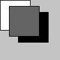
Description
Restores a current transformation matrix. Brings back a transformation formerly pushed to the stack by push-matrix.
Use the pair push-matrix and pop-matrix when you need temporarily to change the coordinate system. Use push-matrix before your changes, then use pop-matrix afterwards to bring back the old setting.
2.11 Mouse
2.11.1 mouse-button
Name: mouse-button
System variable holding the currently pressed mouse button.
Examples
#lang sketching ; Click within the image and press the left and right ; mouse buttons to change the color of the rectangle. (define (draw) (cond [(and mouse-pressed (eq? mouse-button 'left)) (fill 0)] [(and mouse-pressed (eq? mouse-button 'right)) (fill 255)] [else (fill 127)]) (rect 25 25 50 50))
Usage
Values
'left |
| the left mouse was pressed |
'middle |
| the middle mouse was pressed |
'right |
| the right mouse was pressed |
Description
System variable holding the currently pressed mouse button.
The value of mouse-button is only valid if mouse-pressed is true.
2.11.2 mouse-pressed
Name: mouse-pressed
System variable, true if a mouse button is pressed.
Examples
#lang sketching ; Click within the image ; to change the color of the rectangle. (define (draw) (cond [mouse-pressed (fill 0)] [else (fill 255)]) (rect 25 25 50 50))
Usage
Values
#t |
| some mouse button is pressed |
#f |
| no mouse button is pressed |
Description
System variable, true if any mouse button is pressed.
Use mouse-button to find out, which mouse button is pressed.
2.11.3 mouse-x
Name: mouse-x
System variable holding the current x-coordinate of the mouse.
Examples
#lang sketching ; Move the mouse to move the line horizontally (define (draw) (background 204) (line mouse-x 20 mouse-x 80))
Usage
Values
integer |
| current mouse x-coordinate |
Description
System variable holding the current x-coordinate of the mouse.
Note that Sketching can only track the mouse position when the mouse pointer is over the current window. The default value of mouse-x is 0, so 0 will be returned until the mouse moves in front of the sketch window. (This typically happens when a sketch is first run.) Once the mouse moves away from the window, mouse-x will continue to report its most recent position.
2.11.4 mouse-y
Name: mouse-y
System variable holding the current y-coordinate of the mouse.
Examples
#lang sketching ; Move the mouse to move the line vertically. (define (draw) (background 204) (line 20 mouse-y 80 mouse-y))
Usage
Values
integer |
| current mouse y-coordinate |
Description
System variable holding the current y-coordinate of the mouse.
Note that Sketching can only track the mouse position when the mouse pointer is over the current window. The default value of mouse-y is 0, so 0 will be returned until the mouse moves in front of the sketch window. (This typically happens when a sketch is first run.) Once the mouse moves away from the window, mouse-y will continue to report its most recent position.
2.11.5 pmouse-x
Name: pmouse-x
System variable holding the previous x-coordinate of the mouse.
Examples
#lang sketching ; Move the mouse quickly to see the difference ; between the current and previous position. (define (draw) (background 204) (line mouse-x 20 pmouse-x 80) (displayln (~a mouse-x " : " pmouse-x)))
Usage
Values
integer |
| the previous mouse x-coordinate |
Description
System variable holding the previous x-coordinate of the mouse. This is the value mouse-x had in the previous frame.
2.11.6 pmouse-y
Name: pmouse-y
System variable holding the previous y-coordinate of the mouse.
Examples
#lang sketching ; Move the mouse quickly to see the difference ; between the current and previous position. (define (draw) (background 204) (line 20 mouse-y 80 pmouse-y) (displayln (~a mouse-y " : " pmouse-y)))
Usage
Values
integer |
| the previous mouse y-coordinate |
Description
System variable holding the previous y-coordinate of the mouse. This is the value mouse-y had in the previous frame.
2.11.7 on-mouse-pressed
If defined in your program, the event handler on-mouse-pressed is called each time the mouse is pressed.
Examples
#lang sketching ; Press a mouse button to toggle the ; the color of the rectangle between black and white. (define col 0) (define (draw) (fill col) (rect 25 25 50 50)) (define (on-mouse-pressed) (:= col (- 255 col)))
Usage
(define (on-mouse-pressed) <body>)
Description
If defined in your program, the event handler on-mouse-pressed is called each time a mouse button is pressed.
2.11.8 on-mouse-released
If defined in your program, the event handler on-mouse-released is called each time a mouse button is released.
Examples
#lang sketching ; Press and release mouse button to toggle the ; the color of the rectangle between black and white. (define col 0) (define (draw) (fill col) (rect 25 25 50 50)) (define (on-mouse-released) (:= col (- 255 col)))
Usage
(define (on-mouse-released) <body>)
Description
If defined in your program, the event handler on-mouse-released is called each time a mouse button is released.
2.11.9 on-mouse-moved
If defined in your program, the event handler on-mouse-moved is called each time the mouse is moved.
Examples
#lang sketching ; Move your mouse across the image ; to change the color of the rectangle. (define col 0) (define (draw) (fill col) (rect 25 25 50 50)) (define (on-mouse-moved) (:= col (+ col 5)) (when (> col 255) (:= col 0)))
Usage
(define (on-mouse-moved) <body>)
Description
If defined in your program, the event handler on-mouse-moved is called each time the mouse is moved.
2.11.10 on-mouse-dragged
If defined in your program, the event handler on-mouse-dragged is called each time the mouse is dragged.
Examples
#lang sketching ; Drag (click and hold) your mouse across the ; image to change the color of the rectangle. (define col 0) (define (draw) (fill col) (rect 25 25 50 50)) (define (on-mouse-dragged) (:= col (+ col 5)) (when (> col 255) (:= col 0)))
Usage
(define (on-mouse-dragged) <body>)
Description
If defined in your program, the event handler on-mouse-dragged is called each time the mouse is dragged. A mouse is dragged, when it is moved while while a mouse button is pressed.
2.12 Keyboard
2.12.1 key
Name: key
System variable holding the currently pressed key.
Examples
#lang sketching ; Click the sketch to give it focus. ; Press b to change the color. (define (draw) (cond [(and key-pressed (or (equal? key #\b) (equal? key #\B))) (fill 0)] [else (fill 255)]) (rect 25 25 50 50))
Usage
Description
System variable holding the currently pressed key.
The value of key is only valid if key-pressed is true.
Related
See also on-key-pressed and on-key-released.
2.12.2 key-pressed
Name: key-pressed
System variable, true if some key is pressed.
Examples
#lang sketching ; Press any key. (define (draw) (if key-pressed (fill 0) (fill 255)) (rect 25 25 50 50))
Usage
Description
System variable, true if some key is pressed.
Use key to find out which key is pressed.
2.12.3 on-key-pressed
If defined in your program, the event handler on-key-pressed is called each time a key is pressed.
Examples
#lang sketching ; Press a key to toggle the ; the color of the rectangle between black and white. (define col 0) (define (draw) (fill col) (rect 25 25 50 50)) (define (on-key-pressed) (:= col (- 255 col)))
Usage
(define (on-key-pressed) <body>)
Description
If defined in your program, the event handler on-key-pressed is called each time some key is pressed. The key that was pressed is stored in the key variable.
2.12.4 on-key-released
If defined in your program, the event handler on-key-released is called each time a is released.
Examples
#lang sketching ; Press and release a key to toggle the ; the color of the rectangle between black and white. (define col 0) (define (draw) (fill col) (rect 25 25 50 50)) (define (on-kyy-released) (:= col (- 255 col)))
Usage
(define (on-key-released) <body>)
Description
If defined in your program, the event handler on-key-released is called each time a key is released. The key that was released is stored in the key variable.
2.13 Math Operators
2.13.1 += (add assign)
Name: +=
Examples
> (define a 1) > (+= a (+ 4 6)) > a 11
Usage
(+= id expr)
id |
| an identifier |
expr |
| an expression |
Description
The expression (+= id expr) is equivalent to:
(begin (set! id (+ id expr)) id)
That is, (+= id expr) computes the sum, stores it in id and the returns the sum.
2.13.2 -= (subtract assign)
Name: -=
Examples
> (define a 10) > (-= a (+ 2 1)) > a 7
Usage
(-= id expr)
id |
| an identifier |
expr |
| an expression |
Description
The expression (-= id expr) is equivalent to:
(begin (set! id (- id expr)) id)
That is, (-= id expr) computes the difference, stores it in id and the returns the difference.
2.13.3 *= (multiply assign)
Name: *=
Examples
> (define a 2) > (*= a 3) > a 6
Usage
(*= id expr)
id |
| an identifier |
expr |
| an expression |
Description
The expression (*= id expr) is equivalent to:
(begin (set! id (* id expr)) id)
That is, (*= id expr) computes the product, stores it in id and the returns the product.
2.13.4 /= (divide assign)
Name: /=
Examples
> (define a 10) > (/= a 2) > a 5
Usage
(/= id expr)
id |
| an identifier |
expr |
| an expression |
Description
The expression (/= id expr) is equivalent to:
(begin (set! id (/ id expr)) id)
That is, (/= id expr) computes the quotient stores it in id and the returns the quotient.
2.13.5 ++ (post increment)
Name: ++
Examples
> (define a 10) > (define b 1) > (++ a) 11
> a 11
> (+ (++ b) 10) 12
> b 2
Usage
(++ id)
id |
| an identifier |
Description
The expression (++ id) is equivalent to:
That is, (++ id) adds one to id, stores the new value, and the returns the new value.
Note: This operation is part of Sketching, but not Racket.
Note: Adding one is called incrementing.
2.13.6 – (post decrement)
Name: --
Examples
> (define a 10) > (define b 1) > (-- a) 9
> a 9
> (+ (-- b) 10) 10
> b 0
Usage
(-- id)
id |
| an identifier |
Description
The expression (-- id) is equivalent to:
That is, (-- id) subtracts one from id, stores the new value, and the returns the new value.
Note: This operation is part of Sketching, but not Racket.
Note: Subtracting one is called decrementing.
2.14 Math Functions
2.14.1 abs - Absolute Value
Name
Examples
> (abs 1) 1
> (abs 0) 0
> (abs -1) 1
Usage
(abs x)
x |
| a number |
Description
The function abs computes the absolute value.
The absolute value of a number x is the distance from x to 0 on the number line. One can think of (abs x) as the "size" of id since the sign is discarded.
2.14.2 ceil - Ceiling
Name
Examples
> (ceil 2.6) 3.0
> (ceil 2.5) 3.0
> (ceil 2.4) 3.0
> (ceil -0.1) -0.0
> (ceil -0.4) -0.0
> (ceil -0.5) -0.0
> (ceil -0.6) -0.0
Usage
(ceil x)
x |
| a number |
Description
The function ceil computes the "ceiling" of a number.
The ceiling of a number is the smallest integer that is at least as large as x.
Think of ceil as "rounding up" to nearest integer.
If we think of x as a number on the number line, (ceil x) is the first integer larger than x.
Note: In Racket the ceiling function is called ceiling and not ceil.
2.14.3 constrain - Constraining a value to an interval (clamping)
Name
Examples
; Constraining a value to the interval from 5 to 10. > (constrain 4 5 10) 5
> (constrain 5 5 10) 5
> (constrain 6 5 10) 6
; And from the other side > (constrain 9 5 10) 9
> (constrain 10 5 10) 10
> (constrain 11 5 10) 10
#lang sketching ; Move the mouse to affect the horizontal position. (define (draw) (background 204) (define mx (constrain mouse-x 30 70)) (rect (- mx 10) 40 20 20))
Usage
(constrain x low high)
x |
| a number |
low |
| a number, start of the interval |
high |
| a number, end of the interval |
Description
The function constrain "constrains" a value to a certain interval.
If x is a number between low and high, then (constrain x low high) simply returns x unchanged.
If x is a number lower than low, then low is returned.
If x is a number higher than high, then high is returned.
The result of (constrain x low high) is thus guaranteed to lie between low and high.
2.14.4 dist - Distance between two points
Name
Examples
; The lengths of the sides of a 3-4-5 triangle. > (dist 0 0 3 0) 3
> (dist 3 0 3 4) 4
> (dist 3 4 0 0) 5
#lang sketching ; Sets the background gray value based on the distance ; from the mouse position to the center of the screen. (define (draw) (no-stroke) (define d (dist mouse-x mouse-y (/ width 2) (/ height 2))) (define max-distance (dist 0 0 (/ width 2) (/ height 2))) (define gray (remap d 0 max-distance 0 255)) (fill gray) (rect 0 0 width height))
Usage
(dist x1 y1 x2 y2)
x1 |
| x-coordinate of the first point |
y1 |
| y-coordinate of the first point |
x2 |
| x-coordinate of the second point |
y2 |
| y-coordinate of the second point |
Description
Computes the distance from the point (x1,y1) to (x2,y2).
2.14.5 exp - The natural exponential function
Name
Examples
> (exp 0) 1
> (exp 1) 2.718281828459045
> (exp 2) 7.38905609893065
Usage
(exp x)
x |
| a number |
Description
The natural exponential function exp computes the power of Eulers number, 2.718281828..., to the power of x.
As a special case, (exp 1) returns Euler’s number.
Normally the result is inexact, but for x=0 an exact 1 is returned.
2.14.6 floor - Floor
Name
Examples
> (floor 2.6) 2.0
> (floor 2.5) 2.0
> (floor 2.4) 2.0
> (floor -0.1) -1.0
> (floor -0.4) -1.0
> (floor -0.5) -1.0
> (floor -0.6) -1.0
Usage
(floor x)
x |
| a number |
Description
The function floor computes the "floor" of a number.
The floor of a number is the largest integer that is no more than x.
Think of floor as "rounding down" to nearest integer.
If we think of x as a number on the number line, (ceil x) is the first integer smaller than x.
2.14.7 lerp - Linear Interpolation
Name
Examples
; Linear interpolation from 10 to 20. > (lerp 10 20 0.0) 10.0
> (lerp 10 20 0.2) 12.0
> (lerp 10 20 0.4) 14.0
> (lerp 10 20 0.6) 16.0
> (lerp 10 20 0.8) 18.0
> (lerp 10 20 1.0) 20.0
; Values outside the range 0 to 1 works too. > (lerp 10 20 2.0) 30.0
> (stroke-weight 6) > (define a 20) > (define b 80) > (define c (lerp a b 0.2)) > (define d (lerp a b 0.5)) > (define e (lerp a b 0.8)) > (point a 50) > (point b 50) > (point c 50) > (point d 50) > (point e 50)
Usage
(lerp start stop t)
t |
| a number from 0 to 1 |
Description
Linearly interpolate between the numbers start and stop.
The number returned by (lerp start stop t) is (+ start (* t (- stop start))).
For values of t between 0 and 1, one can think of lerp as map from the interval from 0 to 1 onto the interval from start to stop.
The lerp function is convenient for creating motion along a straight path and for drawing dotted lines.
2.14.8 log - Logarithms
Name
Examples
> (log 1) 0
> (log 2) 0.6931471805599453
> (log 8 2) 3.0
> (log (exp 1)) 1.0
> (log (exp 2)) 2.0
Usage
x |
| a positive number |
x |
| the base of the logarithm (defaults to e) |
Description
The natural logarithm function log computes the base b logarithm of x. The base default to Eulers number, 2.718281828. That is, the one argument version of log is the natural logarithm.
Normally the result is inexact, but for 1=0 an exact 0 is returned.
2.14.9 mag - Vector Magnitude
Name
Computes the magnitude of a vector.
Examples
> (mag 3 4) 5
Usage
(mag x y)
x |
| the x-coordinate |
y |
| the y-coordinate |
Description
The function (mag x y) computes the magnitude (length) of the vector (x,y).
The formula used to compute the magnitude is (sqrt (+ (* x x) (* y y))).
2.14.10 remap - Convert from one range to another
Name
Maps a value in one range into another range.
Examples
; The number 15 in the range 10 to 20 maps to 150 in the range 100 to 200. > (remap 15 10 20 100 200) 150
; Values aren't clamped to the interval > (remap 5 10 20 100 200) 50
Usage
(remap x from1 to1 from2 start2)
x |
| a number |
from1 |
| start of the first interval |
to1 |
| end of the first interval |
from2 |
| start of the second interval |
to2 |
| end of the second interval |
Description
The function remap maps a value x in one interval [from1;to1] into another interval [from2;to2].
2.14.11 max - Maximum
Name
Computes the maximum of one or more values.
Examples
> (max 0 1) 1
> (max 0 1 2) 2
Usage
(max x1 x2 ...)
x1 |
| a number |
x2 ... |
| zero or more numbers |
Description
Computes the maximum of one or more numbers.
2.14.12 min - Minimum
Name
Computes the minimum of one or more values.
Examples
> (min 0 1) 0
> (min 0 1 2) 0
Usage
(min x1 x2 ...)
x1 |
| a number |
x2 ... |
| zero or more numbers |
Description
Computes the minimum of one or more numbers.
2.14.13 norm - Normalize number
Name
Normalizes a number from another range into a value between 0 and 1.
Examples
> (norm 20.0 0 50) 0.4
> (norm -10.0 0 100) -0.1
Usage
(norm x start end)
x |
| number to be normalized |
start |
| start of interval |
ned |
| end of interval |
Description
Normalizes a number from a range into a value between 0 and 1. Identical to (remap x start end 0 1).
Numbers outside of the range are not clamped to 0 and 1, because out-of-range values are often intentional and useful.
2.14.14 pow - Powers
Name
Computes powers of a number.
Examples
> (pow 1 3) 1
> (pow 2 3) 8
> (pow 2 -3) 1/8
> (pow -2 3) -8
Usage
(pow x y)
x |
| base number |
y |
| exponent |
Description
Computes the power x to y.
Note: In Racket we normally use expt (short for exponentiate) instead of pow.
2.14.15 random - Random numbers
Name
Generates random floating point numbers. Each time it is called, it will generate a new number. The arguments determine the range.
Examples
; A random number between 4 and 8. > (random 4 8) 4.9690494978712625
; A random number between 0 and 4. > (random 4) 3.532966449590638
; A random number between 0 and 1. > (random) 0.6204520836598318
Usage
(random)
(random to)
(random from to)
from |
| lower bound |
to |
| upper bound |
Description
The function call (random from to) generates a random floating point number between from and to.
The function call (random to) generates a random floating point number between 0 and to.
The function call (random) generates a random floating point number between 0 and 1.
Note
This version of random behaves differently than the one used standard Racket. Use (require (only-in racket random)) belown the lang line in order to get the standard behaviour back.
2.14.16 round - Round to nearest integer
Name
Rounds to nearest integer.
Examples
> (round 0.4) 0.0
> (round 0.5) 0.0
> (round 0.6) 1.0
> (round 1.4) 1.0
> (round 2.5) 2.0
> (round 3.6) 4.0
Usage
(round x)
x |
| a number |
Description
Rounds x to nearest integer.
Note: This is the standard Racket round that for numbers ending in .5 rounds to even following the recommendations of the IEEE floating point standard.
If you need a rounding function that always rounds towards plus infinity, then use this definition in your program:
; round ties towards +inf.0
> (define (round-up x) (floor (+ x 0.5)))
2.14.17 sq - Squaring
Name
Computes the square of a number.
Examples
> (sq 2) 4
> (sq 3) 9
Usage
(sq x)
x |
| a number |
Description
For a number x computes the square (* x x) of the number.
2.14.18 sqrt - Square Root
Name
Computes the square root of a number.
Examples
> (sqrt 2) 1.4142135623730951
> (sqrt 4) 2
> (sqrt 16) 4
Usage
(sqrt x)
x |
| a number |
Description
Computes the square root of the number.
2.15 Trigonometry
2.15.1 cos - Cosine
Name
Computes the cosine of an angle in radians.
Examples
> (cos 0) 1
> (cos (/ π 2)) 6.123233995736766e-17
> (cos (radians 90)) 6.123233995736766e-17
> (size 360 100)
> (for ([d (in-range 0 360 4)]) (line d 50 d (+ 50 (* 40 (cos (radians d)))))) 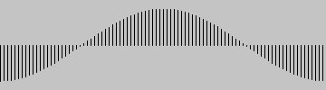
Usage
(cos x)
x |
| an angle in radians |
Description
Computes the cosine of angle x measured in radians.
Note: Use radians to convert an angle in degrees to radians.
2.15.2 sin - Sine
Name
Computes the sine of a number in radians.
Examples
> (sin 0) 0
> (sin (/ π 2)) 1.0
> (sin (radians 90)) 1.0
> (size 360 100)
> (for ([d (in-range 0 360 4)]) (line d 50 d (+ 50 (* 40 (sin (radians d)))))) 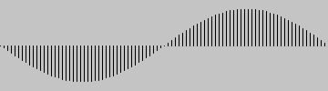
Usage
(sin x)
x |
| an angle in radians |
Description
Computes the sine of angle x measured in radians.
Note: Use radians to convert an angle in degrees to radians.
2.15.3 tan - Tangent
Name
Computes the tangent of a number in radians.
Examples
> (tan 0) 0
> (tan (/ π 4)) 0.9999999999999999
> (tan (radians 45)) 0.9999999999999999
> (size 360 300)
> (for ([d (in-range 0 360 4)]) (line d 150 d (+ 150 (* 40 (tan (radians d)))))) 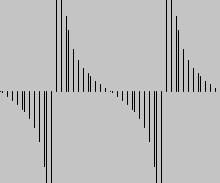
Usage
(tan x)
x |
| an angle in radians |
Description
Computes the tangent of angle x measured in radians.
Note: Use radians to convert an angle in degrees to radians.
2.15.4 acos - Inverse Cosine
Name
Computes the inverse cosine.
Examples
> (acos -1) 3.141592653589793
> (acos 0) 1.5707963267948966
> (acos 1) 0
> (size 200 180) ; Put (0,0) in the lower, left corner > (translate 100 180) ; Make the y-axis point up > (scale 1 -1) ; Plot acos
> (for ([x (in-range -100 104 4)]) (line x 0 x (degrees (acos (/ x 100.0)))))
Usage
(acos x)
x |
| a number between -1 and 1 (inclusive) |
Description
Computes the inverse cosine of a number. The result is in radians.
Note: Use degrees to convert an angle in radians to degrees.
2.15.5 asin - Inverse Sine
Name
Computes the inverse sine.
Examples
> (asin -1) -1.5707963267948966
> (asin 0) 0
> (asin 1) 1.5707963267948966
> (size 200 180) ; Put (0,0) in the center of the screen > (translate 100 90) ; Make the y-axis point up > (scale 1 -1) ; Plot asin
> (for ([x (in-range -100 104 4)]) (line x 0 x (degrees (asin (/ x 100.0)))))
Usage
(asin x)
x |
| a number between -1 and 1 (inclusive) |
Description
Computes the inverse sine of a number. The result is in radians.
Note: Use degrees to convert an angle in radians to degrees.
2.15.6 atan - Inverse Tangent
Name
Computes the inverse tangent.
Examples
> (atan -1/2) -0.4636476090008061
> (atan 0) 0
> (atan 1/2) 0.4636476090008061
> (size 400 180) ; Put (0,0) in the center of the screen > (translate 200 90) ; Make the y-axis point up > (scale 1 -1) ; Plot atan
> (for ([x (in-range -200 204 4)]) (line x 0 x (degrees (atan (/ x 100.0)))))
Usage
(atan x)
x |
| a number between -1 and 1 (inclusive) |
Description
Computes the inverse tangent of a number. The result is in radians.
Note: Use degrees to convert an angle in radians to degrees.
2.15.7 atan2 - Inverse Tangent
Name
Computes the angle between the positive part of the x-axis and the line segment from (0,0) to (x,y).
Examples
> (degrees (atan2 0 1)) 0
> (degrees (atan2 1 1)) 45.0
> (degrees (atan2 1 0)) 90.0
> (degrees (atan2 1 -1)) 135.0
> (degrees (atan2 0 -1)) 180.0
#lang sketching (define (setup) (size 200 200) (define w/2 (/ width 2)) (define h/2 (/ height 2)) ; Put (0,0) in the center of the screen (translate w/2 h/2) ; Make the y-axis point up (scale 1 -1)) (define (draw) ; Angle to mouse (define a (atan2 (- mouse-y h/2) (- mouse-x w/2))) (rotate a) (rect -30 -5 60 10))
Usage
(atan2 y x)
y |
| y-coordinate |
x |
| x-coordinate |
Description
Computes the angle between the positive part of the x-axis and the line segment from (0,0) to (x,y).
Note that atan2 has the y-coordinate first.
The resulting angle is in radians. Use degrees if you need to convert the angle to degrees.
2.15.8 radians - Convert Degrees to Radians
Name
Converts an angle in degrees to radians.
Examples
> (radians 0) 0
> (radians 90) 1.5707963267948966
> (radians 180) 3.141592653589793
> (radians 360) 6.283185307179586
Usage
(radians deg)
deg |
| a number |
Description
Converts an angle in degrees to radians.
Radians and degrees are two ways of measuring the same thing. There are 360 degrees in a circle and 2pi radians in a circle.
All trigonometric functions in Sketching require their parameters to be specified in radians.
2.15.9 degrees - Convert Radians to Degrees
Name
Converts an angle in radiands to degrees.
Examples
> (degrees 0) 0
> (degrees (/ π 2)) 90.0
> (degrees pi) 180.0
> (degrees (* 2 π)) 360.0
Usage
(degrees rad)
rad |
| a number |
Description
Converts an angle in radians to degrees.
Radians and degrees are two ways of measuring the same thing. There are 360 degrees in a circle and 2pi radians in a circle.
All trigonometric functions in Sketching require their parameters to be specified in radians.
2.16 Math Conversion
2.16.1 int
Name: int
Converts a value to an integer.
Examples
> (int 1) 1
> (int 1.4) 1
> (int 1.5) 1
> (int 3/2) 1
> (int #\a) 97
> (int #f) 0
> (int #t) 1
Usage
(int expr)
expr |
| an expression |
Description
Converts numbers, characters and booleans into an exact integer. Non-integer numbers are floored before they are converted.
2.16.2 char
Name: char
Converts an integer to a character.
Examples
> (char 97) #\a
> (int #\a) 97
Usage
(char expr)
expr |
| an expression |
Description
Converts an integer to a character.
2.16.3 binary
Name: binary
Converts a value to string with the equivalent binary notation.
Examples
> (binary 97) "1100001"
> (binary #\a) "1100001"
> (binary (color 0 255 0)) "11111111000000001111111100000000"
Usage
(binary expr)
expr |
| an expression |
Description
Converts an integer, a character or a color to a string containing the equivalent binary notation.
2.16.4 unbinary
Name: unbinary
Converts a string containing a binary number into the corresponding integer.
Examples
> (binary 13) "1101"
> (unbinary "1101") 13
Usage
(unbinary expr)
expr |
| an expression |
Description
Converts a string containing a binary number into the corresponding integer.
2.16.5 hex
Name: hex
Converts integers, characters and colors to a hexadecimal string.
Examples
> (hex 97) "61"
> (hex #\a) "61"
> (hex (color 0 255 0)) "ff00ff00"
Usage
(hex expr)
expr |
| an expression |
Description
Converts integers, characters and colors to a hexadecimal string.
2.16.6 unhex
Name: unhex
Converts a hexadecimal string to an integer.
Examples
> (hex 97) "61"
> (unhex "61") 97
Usage
(unhex expr)
expr |
| an expression |
Description
Converts a hexadecimal string to an integer.
2.17 Noise
2.17.1 noise - Noise
Name
Returns the Perlin noise value at specified coordinates.
Examples
> (cos 0) 1
> (cos (/ π 2)) 6.123233995736766e-17
> (cos (radians 90)) 6.123233995736766e-17
> (size 360 100)
> (for ([d (in-range 0 360 4)]) (line d 50 d (+ 50 (* 40 (cos (radians d))))))

Usage
(cos x)
x |
| an angle in radians |
Description
Computes the cosine of angle x measured in radians.
Note: Use radians to convert an angle in degrees to radians.
2.18 Constants
2.18.1 Pi and friends
Name
pi , π, pi/2 , π/2, pi/4 , π/4, 2pi , 2π
Examples
> (list pi π) '(3.141592653589793 3.141592653589793)
> (list pi/2 π/2) '(1.5707963267948966 1.5707963267948966)
> (list pi/4 π/4) '(0.7853981633974483 0.7853981633974483)
> (list 2pi 2π) '(6.283185307179586 6.283185307179586)
> (size 100 100) > (define x (/ width 2)) > (define y (/ height 2)) > (define d (* 0.8 width)) > (ellipse-mode 'center) > (arc x y d d 0 π/4) > (arc x y (- d 20) (- d 20) 0 π/2) > (arc x y (- d 40) (- d 40) 0 π) > (arc x y (- d 60) (- d 60) 0 2π) > (arc x y (- d 60) (- d 60) 0 2π)
Description
The mathematical constant π is the number 3.1415927. It is the ratio of the circumference of a circle to its diameter. It is useful in combination with the trigonometric functions sin and cos.
2.19 Environment
2.19.1 width
Name: width
System variable whose value is the width of the canvas.
Examples
> (no-stroke) > (background 0) > (rect 0 40 width 20) > (rect 0 60 (/ width 2) 20)
Usage
Description
The system variable width holds the width of the canvas.
The variable is initially set by the size function from within setup. If size is not called by setup, the default width is 100.
It is not possible to use set! to change the width of the canvas.
2.19.2 height
Name: height
System variable whose value is the height of the canvas.
Examples
> (no-stroke) > (background 0) > (rect 40 0 height 20) > (rect 60 0 (/ height 2) 20)
Usage
Description
The system variable height holds the height of the canvas.
The variable is initially set by the size function from within setup. If size is not called by setup, the default height is 100.
It is not possible to use set! to change the height of the canvas.
2.19.3 size
Name: size
Sets the size of the canvas (window).
Examples
> (size 200 100) > (background 153) > (line 0 0 width height)

#lang sketching (define (setup) (size 320 240)) (define (draw) (background 153) (line 0 0 width height))
Usage
(size w h)
w |
| an integer width |
h |
| an integer height |
Description
Defines the dimension of the display window width and height in units of pixels. Use size as the first expression in your setup function.
The built-in variables width and height are set by the values passed to this function. For example, running (size 640 480) will assign 640 to the width variable and 480 to the height variable. If size is not used, the window will be given a default size of 100 × 100 pixels.
The size function can only be used once inside a sketch, and it cannot be used for resizing.
If you need a full screen canvas, use full-screen.
The maximum width and height is limited by your operating system, and is usually the width and height of your actual screen. On some machines it may simply be the number of pixels on your current screen.
The minimum width and height is around 100 pixels in each direction. This is the smallest that is supported across Windows, macOS, and Linux
2.19.4 fullscreen
Use the full screen for the canvas.
Examples
#lang sketching (define x 0) (define (setup) (fullscreen) (background 0) (no-stroke) (fill 102)) (define (draw) (rect x (* 0.2 height) 1 (* 0.6 height)) (:= x (+ x 2)))
Usage
(fullscreen)
Description
Use the full screen for the canvas. Call fullscreen from setup.
2.19.5 cursor
Sets the image used as the mouse cursor.
Examples
#lang sketching (define (setup) (cursor 'arrow))
#lang sketching ; Move the mouse pointer to see the different mouse cursors (define cursors '(arrow bullseye cross hand ibeam watch blank size-n/s size-e/w size-ne/sw size-nw/se)) (define (setup) (size 500 100) (cursor 'arrow)) (define (draw) ; draw vertical strips (define n (length cursors)) (define w (/ width n)) (stroke 255) (for ([x (in-range 0 width w)]) (fill (floor (lerp 0 255 (/ x width)))) (rect x 0 w height)) ; change cursor (define index (constrain (floor (/ mouse-x w)) 0 (- n 1))) (define c (list-ref cursors index)) ; write chosen cursor (text-size 30) (fill 255) (text (~a c) 200 25) (cursor c))
Usage
(cursor sym)
(cursor bm)
sym |
| one of the symbols 'arrow 'bullseye 'cross 'hand 'ibeam 'watch 'blank 'size-n/s 'size-e/w 'size-ne/sw 'size-nw/se |
img |
| a bitmap |
Description
Sets the image used as the mouse cursor.
Use (cursor sym) to choose one of the builtin mouse cursors.
Use (cursor bm) to use a bitmap as a custom mouse cursor.
2.19.6 no-cursor
Hides the mouse cursor.
Examples
#lang sketching ; Press the mouse to hide the cursor (define (draw) (if mouse-pressed (no-cursor) (cursor 'hand)))
Usage
(no-cursor)
Description
Hides the mouse cursor.
Note: Currently there is a problem with the example on macOS Big Sur. Mail me: does it work on Linux and Windows?
2.19.7 smoothing
Name: smoothing
Enables or disables anti-aliased smoothing for drawing.
Examples
> (smoothing 'smoothed) > (line 0 0 100 100) > (smoothing 'unsmoothed) > (line 100 100 0 0)
Usage
(smoothing sym)
sym |
| one of the symbols 'unsmoothed 'smoothed 'aligned |
Description
Enables or disables anti-aliased smoothing for drawing. Text smoothing is not affected by this setting.
Use (smoothing 'unsmoothed) to disable both anti-alias and pixel alignment.
Use (smoothing 'smoothed) to enable both anti-alias and pixel alignment.
Use (smoothing 'aligned) to disable anti-alias and enable pixel alignment.
See the Racket documentation for more on pixel alignment.
2.19.8 no-smooth
Name: no-smooth
Disables anti-aliased smoothing for drawing.
Examples
> (fill 255) > (no-smooth) > (line 0 0 100 100)
Usage
Description
Enables or disables anti-aliased smoothing for drawing. Text smoothing is not affected by this setting.
2.19.9 nap
Pauses the program (the current thread).
Usage
(nap ms)
ms |
| milliseconds to pause |
Description
Pauses the program (the current thread) for the given number of milliseconds.
Note: It’s a bad practise to call nap from draw and the event handlers. If you need to affect the speed of an animation, use frame-rate instead.
Note: In processing the nap function is called delay. In Racket delay is used to make promisses instead.
2.19.10 focused
Name: focused
System variable holding whether the canvas has mouse and keyboard focus.
Examples
#lang sketching (define (draw) (cond [focused (ellipse 25 25 50 50)] [else (line 0 0 100 100) (line 100 0 0 100)]))
Usage
Values
#t |
| the canvas has focus |
#f |
| the canvas haven't got focus |
Description
System variable holding whether the canvas has mouse and keyboard focus.
When the canvas has focus, keyboard events mouse events are sent sent to the Sketching program.
2.19.11 frame-count
Name: frame-count
The system variable frame-count contains the number of frames displayed since the program started.
Examples
#lang sketching (define (setup) (set-frame-rate! 30) (rect-mode 'center)) (define (draw) (background 0) (fill 255) (text (~a frame-count) 50 50))
Usage
Description
The system variable frame-count contains the number of frames displayed since the program started. At the time setup is called, the value is 0. After each call to draw, the variable is incremented.
2.19.12 frame-rate
The system variable frame-rate contains the approximate frame rate.
Examples
#lang sketching (define (setup) (set-frame-rate! 30)) (define (draw) (line 0 0 width height) (println frame-rate))
Usage
frame-rate
Description
The system variable frame-rate contains the approximate frame rate. The initial frame rate is 10 frames per second. The system variable is updated with each frame. The value is averaged over several frames, so the value is accurate only after the first 5-10 frames have been drawn.
Use set-frame-rate! to set the frame rate to another value.
2.19.13 set-frame-rate!
Sets the desired number of frames to be displayed per second.
Examples
#lang sketching (define (setup) (set-frame-rate! 30)) (define (draw) (line 0 0 width height) (println frame-rate))
Usage
(set-frame-rate! fps)
Values
fps |
| number of desired frames per second |
Description
Sets the desired number of frames to be displayed per second.
The system will attempt to call draw the desired number of times per second, but there is no guarantees. If draw is slow, the desired number of frames per second might be achievable.
2.20 Other
2.20.1 loop
Start the draw loop.
Examples
In this example, draw is only called in the animation loop if the mouse is pressed.
#lang sketching (define (setup) (size 200 200) (no-loop)) (define x 0) (define (draw) (background 204) (+= x 1) (when (> x width) (:= x 0)) (line x 0 x height)) (define (on-mouse-pressed) (loop)) (define (on-mouse-released) (no-loop))
Usage
(loop)
Description
Running a Sketching program will start an animation loop that for each frame calls draw which is expected to draw the next frame (image) of the animation. For programs that display only static images or react only to key and mouse events, there are no reason to call draw for every frame. The pair no-loop and loop respectively disables and enables calling draw each frame.
2.20.2 no-loop
Makes the animation loop stop calling draw.
Examples
In this example, draw is only called in the animation loop if the mouse is pressed.
#lang sketching (define (setup) (size 200 200) (no-loop)) (define x 0) (define (draw) (background 204) (+= x 1) (when (> x width) (:= x 0)) (line x 0 x height)) (define (on-mouse-pressed) (loop)) (define (on-mouse-released) (no-loop))
Usage
(no-loop)
Description
Running a Sketching program will start an animation loop that for each frame calls draw which is expected to draw the next frame (image) of the animation. For programs that display only static images or react only to key and mouse events, there are no reason to call draw for every frame. The pair no-loop and loop respectively disables and enables calling draw each frame.
2.20.3 := (Assignment)
Name: :=
A simple assignment, like (:= id expr) evaluates the expression and stores the result in the location bound to id.
The assignment operator can also be used to set fields in structures or objects or to store values in vectors.
Examples
> (define a 1) > (:= a 11) > a 11
> (define b (vector 1 2 3)) > (:= b_1 22) > (:= b 2 33) > b '#(1 22 33)
> b_1 22
> b_2 33
> (class Horse Object (field [legs 4]) (super-new)) > (define h (new Horse)) > (:= h.legs 3) > h.legs 3
> (struct horse (breed height color)) > (define bella (horse "Danish Warmblood" 170 "brown")) > (:= bella.height 171) > bella (horse "Danish Warmblood" 171 "brown")
Nested assignments are possible too:
> (define table (vector (vector 'a0 'a1) (vector 'b0 'b1)))
> (for ([i 2]) (for ([j 2]) (:= table_i_j (list i j)))) > table '#(#((0 1) a1) #((1 1) b1))
Usage
(:= id expr)
Description
A simple assignment, like (:= id expr) evaluates the expression and stores the result in the location bound to id.
The identifier id can contain .f or _i where f is a field name and i is an index (an identifier or a natural number). Here .f denotes fields in objects or structures and _i denotes reference to a vector slot.
2.20.4 struct
Name: struct
Declares a structure type. An instance of the type is called a structure. A structure contains a value for each field.
Examples
> (struct horse (breed height color)) > (define bella (horse "Danish Warmblood" 171 "brown")) ; All fields are transparent. > bella (horse "Danish Warmblood" 171 "brown")
; Dot notation can be used to reference fields. > bella.height 171
; All fields are mutable. Dot notation works with assignment. > (:= bella.height 172) > bella (horse "Danish Warmblood" 172 "brown")
Usage
(struct name (field ...))
Description
Declares a structure type named name with fields field... .
Note: The construct struct is the same as the Racket construct struct, except that all fields are mutable and transparent by default. Also, struct works together with the assignment operator := which the standard Racket struct doesn’t.
2.20.5 class
Name: class
Declares a class. An instance of a class is called an object. An object can have fields and methods. By convention class have capitalized names.
Examples
> (class Horse Object (init-field breed height color) (super-new)) > (define bella (make-object Horse "Danish Warmblood" 172 "brown")) ; All fields are transparent. > bella <object:Horse (breed "Danish Warmblood") (height 172) (color "brown")>
; Dot notation can be used to reference fields. > bella.height 172
; All fields are mutable. Dot notation works with assignment. > (:= bella.height 173) > bella <object:Horse (breed "Danish Warmblood") (height 173) (color "brown")>
Usage
(struct name (field ...))
Description
Declares a structure type named name with fields field... .
Note: The construct struct is the same as the Racket construct struct, except that all fields are mutable and transparent by default. Also, struct works together with the assignment operator := which the standard Racket struct doesn’t.
2.20.6 Object
Name: Object
A builtin class with no methods or fields.
Examples
> (class Horse Object (init-field breed height color) (super-new)) > (define bella (make-object Horse "Danish Warmblood" 174 "brown")) > (display bella) <object:Horse (breed Danish Warmblood) (height 174) (color brown)>
> (write bella) <object:Horse (breed "Danish Warmblood") (height 174) (color "brown")>
> (print bella) <object:Horse (breed "Danish Warmblood") (height 174) (color "brown")>
Description
A builtin class with no methods or fields.
Subclasses of Object work with display, write and print to display its fields and field values.
2.20.7 save
Saves the current display as an image file.
Examples
#lang sketching (define (setup) (size 100 100) ; Use no-loop to produce one frame only (no-loop)) (define (draw) (background "white") (stroke "red") (line 0 0 100 100) (stroke "blue") (line 0 100 100 0) (save "test.png"))
Usage
(save filename)
(save filename #:kind 'png)
(save filename #:kind 'jpeg)
(save filename #:kind 'bmp)
(save filename #:kind 'gif)
The filename can be a string or a file path.
Description
Saves the current display as an image file. The default image format is png but you use specify other file formats such as jpeg, bmp and gif.